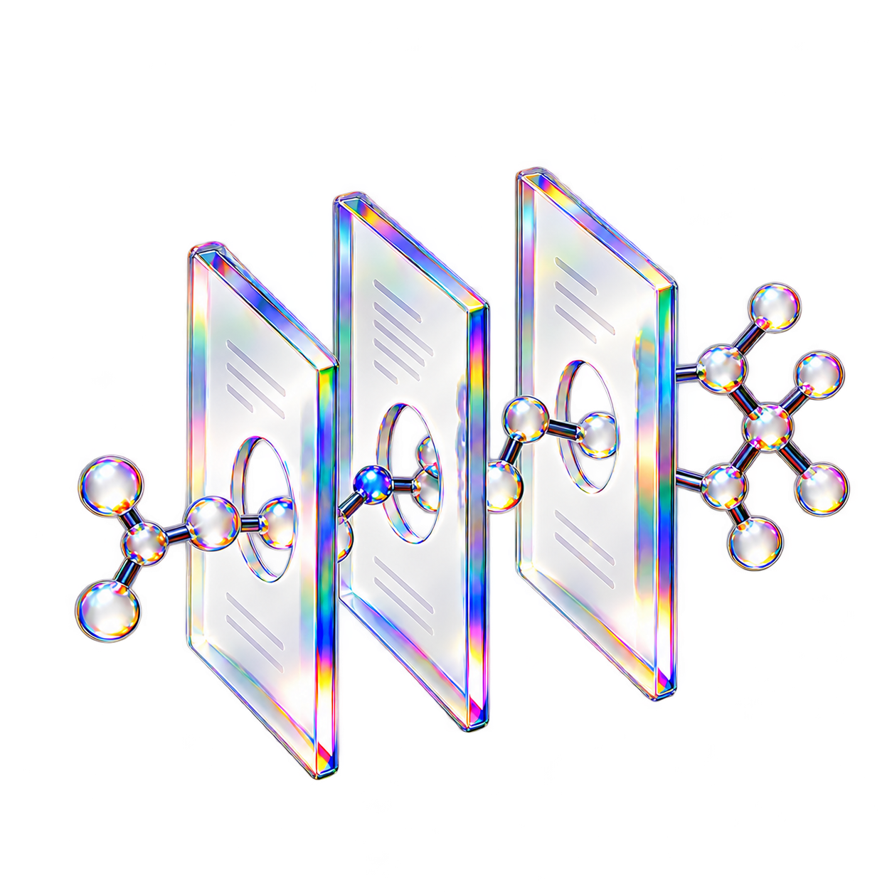

연구소 선택과 A1~A6 화면
연구소 고르기 화면부터 A1 표적 선정~A6 상장 보고서까지 전 단계가 연결됐습니다.
PART 1 · 구현 현황과 데이터 3단 강등
외부 과학 API가 느려지거나 막혀도 수업이 멈추지 않도록 3단 강등 구조를 갖췄습니다.

연구소 고르기 화면부터 A1 표적 선정~A6 상장 보고서까지 전 단계가 연결됐습니다.
ChEMBL, RCSB PDB, SAbDab2, ColabFold, ESMFold를 서버 큐로 호출합니다.
한 번 조회한 구조·번호·접힘 결과는 DB에 저장해 같은 요청에 즉시 응답합니다.
교실 인터넷이나 외부 서버에 장애가 나도 내장된 3대 표적 실측 자료로 완주합니다.
사이드바 하단에 실시간 조회, 저장 결과, 고정 자료 중 현재 데이터 상태가 투명하게 표시됩니다.